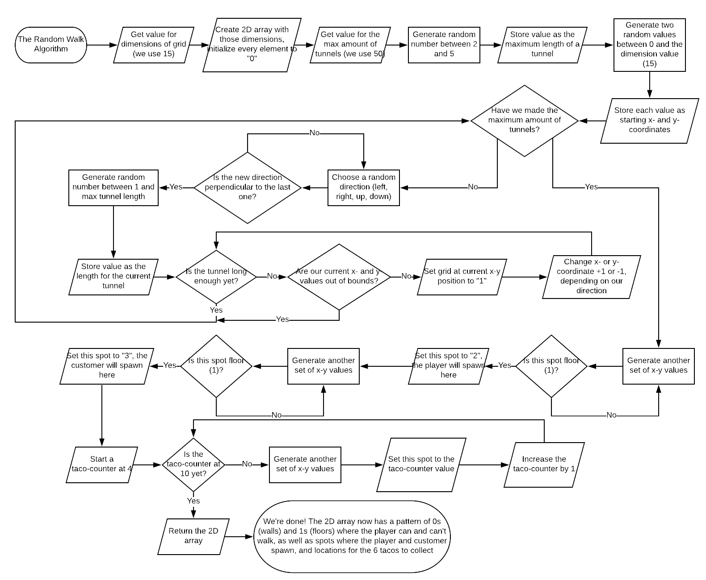

Here is everything you need to know about the Random Walk Algorithm, the algorithm behind the game!
The Random Walk Algorithm is a simple map-generating algorithm that uses a grid to simulate the making of pathways, or as we call them in our code, tunnels. The algorithm will start at a random spot on the grid, travel in a random direction for a random length, and then turn and repeat the process until the desired map is complete. This algorithm can be very useful in 2D tilemap games, like a dungeon-solving puzzle game or a maze game.
IPO
| Input | Processing | Output |
|---|---|---|
|
Dimensions of the square grid
We keep ours as 15 |
Create a 2D array with the dimensions
Set every single spot in the array to 0 to start |
A nicely formatted 2D array of 0s (walls) and 1s (floors) |
|
Maximum number of tunnels to make
Determines how complex the map is, we use 50 |
Choose a random direction (←, ↑, →, ↓)
Choose a random x-y position as our start |
Following this, we do our "Extended Random Walk Algorithm" by selecting random floor spots, and turning them into spawn points for the player, customer, and the 6 tacos
See the bottom 3 rows of the flowchart below |
|
Maximum length a tunnel can be
We choose a random length between 2 and 5, this means levels can be either really small or large for good contrast |
Set current x-y spot to 1, move ahead 1 spot in whichever direction we chose
Repeat tunneling as many times as the max. tunnel length Check each time we move ahead to see if we're going out of bounds, and if we are stop the tunnel early |
|
| Choose a new direction that's perpendicular to the last and repeat the process of making a tunnel until we have reached the maximum number of tunnels. |
Flowchart
Pseudocode
Get dimensions (these 3 can be whatever you want)
Get maxTunnels
Get maxLength
Directions = {{-1, 0}, {1, 0}, {0, -1}, {0, 1}}
map = 0 (it’s a 2d array, everything starts at 0)
currentRow = random less than dimensions
currentColumn = random less than dimensions
while(maxTunnels > 0)
while(RandomDirection is perpendicular to LastDirection)
*We’ll figure out how to do this condition in the actual code*
RandomDirection = directions[random between 0 and 3]
RandomLength = random between 1 and maxLength
TunnelLength = 0
while (TunnelLength < RandomLength)
If currentRow is 0 and RandomDirection is -1 stop
If currentColumn is 0 and RandomDirection is -1 stop
If currentRow is dimensions and RandomDirection is 1 stop
If currentRow is dimensions and RandomDirection is 1 stop
Else
map[currentRow][currentColumn] = 1
Add RandomDirection[0] to currentRow
Add RandomDirection[1] to currentColumn
Add 1 to TunnelLength
If tunnelLength equals maxLength
LastDirection = RandomDirection
Subtract 1 from maxTunnels
*Everything below here is the Extended Random Walk, the stuff that adds all of our extra stuff to the map. Check out the last 3 rows of the flowchart.*
PlayerSpawned = false
CustomerSpawned = false
tacoCount = 4
While (player isn’t spawned)
Xcoordinate = random less than dimensions
Ycoordinate = random less than dimensions
If map[Xcoordinate][Ycooordinate] is 1
map[Xcooordinate][Ycooordinate] = 2
PlayerSpawned = true
While (customer isn’t spawned)
Xcoordinate = random less than dimensions
Ycoordinate = random less than dimensions
If map[Xcoordinate][Ycooordinate] is 1
map[Xcooordinate][Ycooordinate] = 3
CustomerSpawned = true
While (tacoCount isn’t 10)
Xcoordinate = random less than dimensions
Ycoordinate = random less than dimensions
If map[Xcoordinate][Ycooordinate] is 1
map[Xcooordinate][Ycooordinate] = tacoCount
tacoCount goes up 1
Return map
More info about the Random Walk Algorithm
How to actually play the game!
Use the arrow keys to move Waluigi, and once you've collected all of the tacos Mario wants, press Enter to serve them to him!